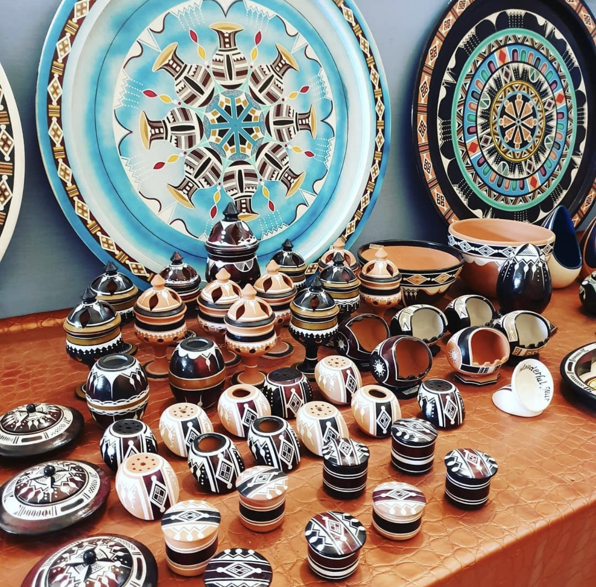

l'Artisanat est une activité mannuelle qui permet de transformé une matière première en produit finis .le Niger offre beaucoup de variantes dans le Domaine de L'Artisanat . On trouve entre autre des réalisations en cuir de chèvre, zébu ou chameau, et des créations à base de métaux. C'est surtout au Sahel qu'on travaille le cuir ; on réalise des sandales, poufs, coussins, porte-gri gri, sacs et boîtes. et surtout le bronze qui est utilisé dans la fabrication des figurines , des bijous . L'argenterie sert pour les bijoux (les célèbres croix du désert et les bracelets), l'aluminium quant à lui est utilisé pour la fabrication d'ustensiles de cuisine. Sans oublier les réalisations en vannerie (paniers etc). Niamey regroupe à peu près tous les styles de ce qui se fait au Niger. Dans les autres villes, il existe souvent des centres artisanaux.l'artisanat joue un grand role sociale et économique au niger.
